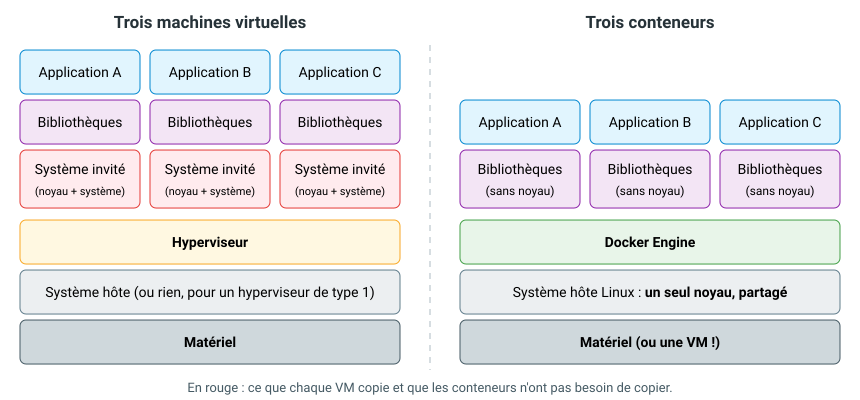
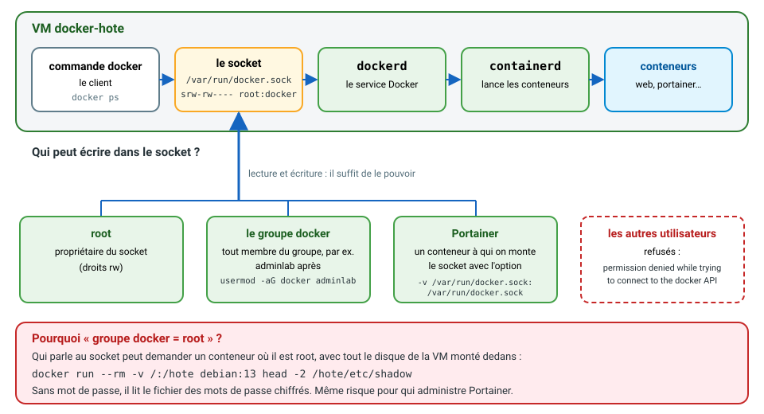

Découvrir Docker et l'installer¶
Résumé
Cette première partie répond en quelques minutes à la question « Docker, c'est quoi, et pourquoi tout le monde l'utilise ? », puis passe tout de suite à la pratique. On crée la machine virtuelle docker-hote sous Debian 13, on y installe Docker depuis le dépôt officiel, exactement comme le recommande la documentation de Docker, et on vérifie que tout fonctionne avec le célèbre hello-world.
On voit ensuite comment utiliser Docker sans taper sudo à chaque commande, et pourquoi ce confort a un prix en sécurité. On termine par deux façons d'automatiser l'installation : le script officiel de Docker et un script maison commenté. À la fin, Docker 29 tourne dans docker-hote et un instantané le protège.
| Propriété | Valeur |
|---|---|
| Difficulté | Débutant |
| Durée estimée | 2 h (dont environ 15 minutes d'installation de Debian) |
| Version décrite | Debian 13.7 « trixie », Docker Engine 29.10, Docker Compose 5.8 |
| Place dans le parcours | Partie 1 sur 17 du parcours Docker — jour 1 |
| Dernière mise à jour | 2026-11-24 |
Convention de lecture
🖥️ PC hôte (Windows, hyperviseur, PowerShell) · 🐧 VM docker-hote · ✍️ exercice · 🛟 instantané. Les comptes et mots de passe sont rappelés sur la page d'accueil du parcours.
1. Docker en dix minutes¶
1.1 Le problème du « chez moi, ça marche »¶
Une application ne vit jamais seule. Un site WordPress, par exemple, a besoin d'un serveur web (Apache), du langage PHP dans une version précise, de modules PHP, d'une base de données… Sur le poste du développeur, tout fonctionne. Sur le serveur de production (celui qu'utilisent les vrais utilisateurs), la version de PHP est différente, un module manque, et l'application plante. D'où la phrase que tout administrateur a entendue un jour : « Pourtant, chez moi, ça marche ! »
C'est un peu comme une recette de cuisine réussie chez soi, qui rate chez un ami parce que son four ne chauffe pas pareil : le plat n'a pas changé, c'est l'environnement qui est différent.
1.2 Avant Docker : un serveur, ou une VM, par application¶
Pour éviter les conflits, on avait deux solutions :
- tout installer sur le même serveur : économique, mais dangereux. Le jour où une application a besoin de PHP 8.4 et qu'une autre ne supporte que PHP 8.2, l'une des deux casse. Plus on ajoute d'applications, plus le risque de conflit grandit : c'est le piège du tout-en-un ;
- une machine virtuelle par application : chaque application a son propre système, rien ne se mélange. Mais chaque VM embarque un système d'exploitation complet (noyau, services, mises à jour à faire…), occupe plusieurs Go de disque et de mémoire, et met de longues secondes à démarrer.
1.3 Le conteneur : isoler l'application, pas tout le système¶
Un conteneur isole une application avec tout ce dont elle a besoin (ses fichiers, ses bibliothèques, ses réglages), mais sans copier un système d'exploitation complet : tous les conteneurs d'une machine partagent le même noyau Linux, celui de la machine qui les héberge.

Une VM copie un système complet ; un conteneur ne copie que l'application et ce dont elle dépend.
Résultat :
- un conteneur démarre en une fraction de seconde : il n'y a pas de système à démarrer, seulement un programme ;
- il pèse peu : quelques Mo pour les plus petits, quelques centaines de Mo pour une application complète, contre plusieurs Go pour une VM ;
- on peut en faire tourner des dizaines sur un même serveur, côte à côte, sans qu'ils se gênent.
Comment le noyau sépare-t-il les conteneurs ?
Le noyau Linux sait donner à un groupe de processus sa propre vue du système : ses propres processus, sa propre carte réseau, sa propre arborescence de fichiers, son propre nom de machine. Ce mécanisme s'appelle les espaces de noms (namespaces). Un autre mécanisme, les groupes de contrôle (cgroups), limite ce que ce groupe peut consommer en processeur et en mémoire. Un conteneur, c'est simplement un ou plusieurs processus enfermés par ces deux mécanismes. La partie 11 du parcours Virtualisation le montre en détail.
Un conteneur n'est pas une VM légère
Puisque le noyau est partagé, un conteneur Linux a besoin d'un noyau Linux, et un conteneur est moins isolé qu'une VM : une faille dans le noyau concerne tous les conteneurs de la machine. C'est pour cela que, dans la vraie vie, on fait souvent tourner Docker dans des VM : la VM isole les clients ou les services sensibles entre eux, et les conteneurs simplifient le déploiement à l'intérieur. C'est exactement ce qu'on fait dans ce parcours.
1.4 L'idée vient des ports¶
Avant les années 1960, charger un navire prenait des jours : chaque marchandise (sacs, tonneaux, caisses de toutes tailles) était posée une par une dans la cale. Puis est arrivé le conteneur maritime : une boîte métallique de taille standard. Peu importe ce qu'elle contient, les grues, les trains, les camions et les navires savent tous la manipuler de la même façon.
Docker applique cette idée aux applications. Peu importe ce que contient le conteneur (un serveur web, une base de données, un outil de supervision), on le lance, on l'arrête, on le déplace et on le supprime toujours avec les mêmes commandes. Le logo de Docker, une baleine qui porte des conteneurs, vient de là.
1.5 Les mots à connaître¶
| Mot | Ce que c'est | Analogie |
|---|---|---|
| Image | Un modèle en lecture seule qui contient une application et tout ce dont elle a besoin | La recette, ou le moule |
| Conteneur | Une image en train de tourner : un ou plusieurs processus isolés | Le plat préparé à partir de la recette |
| Docker Engine | Le logiciel qui fabrique et fait tourner les conteneurs sur une machine Linux : un service, dockerd, et une commande, docker |
La cuisine et le cuisinier |
| Registre | Un serveur qui stocke et distribue des images. Le plus connu est Docker Hub | Le supermarché des recettes |
Une même image peut donner naissance à autant de conteneurs qu'on veut, comme une recette permet de cuisiner plusieurs fois le même plat. La partie 2 manipule tout cela concrètement.
1.6 Docker, Docker Engine, Docker Desktop : qui est qui ?¶
Docker est d'abord le nom d'une entreprise, Docker Inc., qui a lancé l'outil en 2013 en le publiant en logiciel libre. Écrit en langage Go, il s'est imposé comme la façon standard de fabriquer et de lancer des conteneurs, au point que tous les grands fournisseurs de cloud (Amazon Web Services, Microsoft Azure, Google Cloud…) savent exécuter des conteneurs au format Docker.
| Produit | Pour qui | Prix |
|---|---|---|
| Docker Engine | Les serveurs Linux : c'est ce qu'on installe dans ce parcours | Gratuit et libre (licence Apache 2.0) |
| Docker Desktop | Les postes de travail Windows, macOS et Linux : une application graphique qui fait tourner Docker Engine dans une petite VM cachée | Gratuit pour un usage personnel, l'enseignement, les projets libres non commerciaux et les entreprises de moins de 250 salariés et de moins de 10 millions de dollars de chiffre d'affaires annuel ; payant au-delà |
| Docker Hub | Tout le monde : le registre public d'images | Gratuit avec des limites (voir la partie 15) |
Docker Desktop est présenté en partie 4. Un administrateur systèmes et réseaux, lui, travaille surtout avec Docker Engine sur des serveurs Linux.
2. Créer la VM docker-hote¶
2.1 Les réglages de la VM¶
| Réglage | Valeur |
|---|---|
| Nom de la VM | docker-hote |
| Système invité | Debian 12.x ou 13.x 64 bits (Workstation) · Debian (64-bit) (VirtualBox) |
| Processeur | 2 vCPU |
| Mémoire | 4 Go (4096 Mo) |
| Disque | 40 Go, dynamique (alloué au fur et à mesure) |
| Image d'installation | debian-13.7.0-amd64-netinst.iso, ou la version 13.x la plus récente (13.8…) : les commandes sont les mêmes |
- 🖥️ File > New Virtual Machine (Fichier > Nouvelle machine virtuelle), choisir Typical (recommended).
- 🖥️ Choisir Installer disc image file (iso) (fichier image du disque d'installation) et l'image de Debian, puis Linux et la version Debian la plus récente de la liste en 64-bit (Debian 13.x 64-bit, ou Debian 12.x 64-bit si la 13 n'apparaît pas).
- 🖥️ Nommer la VM
docker-hote, fixer la taille du disque à 40 Go, puis Customize Hardware (personnaliser le matériel) : Memory 4096 Mo, Processors 2. - 🖥️ Laisser la carte réseau en NAT (VMnet8). Rien d'autre à régler : le PC pourra joindre la VM par le réseau VMnet8.
La partie 3 du parcours Virtualisation détaille chaque écran de l'assistant.
- 🖥️ Machine > Nouvelle…, nommer la VM
docker-hote, choisir l'image ISO de Debian, type Linux, version Debian (64-bit). S'assurer que l'installation automatique (Unattended Installation) n'est pas activée : selon la version de VirtualBox, la case s'appelle Skip Unattended Installation (à cocher) ou Proceed with Unattended Installation (à laisser décochée). On veut faire l'installation soi-même pour choisir les logiciels. - 🖥️ Régler la mémoire à 4096 Mo, 2 processeurs, et un disque de 40 Go (dynamique par défaut).
- 🖥️ Avant le premier démarrage : Configuration > Réseau. La carte 1 reste en NAT. Activer la carte 2, mode d'accès Réseau privé hôte (Host-only Adapter), nom VirtualBox Host-Only Ethernet Adapter. Si l'onglet de la carte 2 n'apparaît pas, passer la fenêtre de configuration en mode Expert (bouton en haut de la fenêtre).
Pourquoi deux cartes réseau dans VirtualBox ?
En mode NAT simple, VirtualBox cache la VM derrière le PC : elle sort sur Internet, mais le PC ne peut pas la joindre sans créer des règles de redirection de port. La seconde carte, en réseau privé hôte, relie directement le PC et la VM sur le réseau 192.168.56.0/24. C'est par elle qu'on ouvrira les pages web des conteneurs depuis le navigateur du PC.
2.2 Installer Debian 13¶
🖥️ Démarrer la VM et 🐧 suivre l'installateur Debian, sans interface graphique, avec ces réponses :
| Écran de l'installateur | Réponse |
|---|---|
| Langue, pays, clavier | Français, France, Français |
| Carte réseau principale (VirtualBox seulement) | La première carte, enp0s3 |
| Nom de machine | docker-hote |
| Domaine | laisser vide |
Mot de passe du superutilisateur (root) |
TutoDocker-Lab1! |
| Nom complet et identifiant du nouvel utilisateur | adminlab et adminlab |
Mot de passe de adminlab |
TutoDocker-Lab1! |
| Partitionnement | Assisté, utiliser un disque entier, tout dans une seule partition |
| Sélection des logiciels | Décocher « environnement de bureau Debian » et « GNOME » ; cocher « serveur SSH » et « utilitaires usuels du système » |
| Programme de démarrage GRUB | Oui, sur le disque proposé (/dev/sda, ou /dev/nvme0n1 sur certaines VM Workstation) |
L'installation dure environ 15 minutes. Le pas-à-pas illustré, écran par écran, est dans la partie 3 du parcours Virtualisation.
2.3 Noter l'adresse de la VM¶
🐧 Se connecter en root sur la console de la VM, puis afficher ses adresses :
La carte ens33 (le nom peut varier) a une adresse en 192.168.x.N/24, avec N entre 128 et 254 : c'est IP-de-la-VM. La noter.
La seconde carte, enp0s8, n'a pas encore d'adresse : l'installateur de Debian ne configure que la carte choisie pendant l'installation. Lui demander une adresse automatiquement à chaque démarrage :
cat >> /etc/network/interfaces <<'EOF'
# Seconde carte : réseau privé hôte de VirtualBox
allow-hotplug enp0s8
iface enp0s8 inet dhcp
EOF
ifup enp0s8
ip -br a
La carte enp0s8 a maintenant une adresse en 192.168.56.1xx/24 : c'est IP-de-la-VM. La noter.
2.4 Se connecter en SSH depuis le PC¶
🖥️ Ouvrir PowerShell sur le PC et se connecter avec le compte adminlab (remplacer IP-de-la-VM par l'adresse notée) :
À la première connexion, répondre yes pour accepter l'empreinte de la VM, puis taper le mot de passe (rien ne s'affiche pendant la saisie, c'est normal). À partir de maintenant, toutes les commandes 🐧 peuvent se taper dans cette fenêtre, où le copier-coller fonctionne.
Prendre l'instantané 00-debian-installee
🐧 Éteindre la VM : dans la session SSH, su - (mot de passe de root), puis poweroff ; ou directement poweroff sur la console de la VM, connecté en root. 🖥️ Ensuite, prendre un instantané nommé 00-debian-installee : VM > Snapshot > Take Snapshot dans Workstation, Instantanés > Prendre dans VirtualBox. Il permet de recommencer l'installation de Docker autant de fois que nécessaire.
3. Installer Docker depuis le dépôt officiel¶
3.1 Pourquoi pas le paquet docker.io de Debian ?¶
Debian propose son propre paquet Docker, docker.io. Il s'installe en une commande (apt install docker.io), mais il est figé sur la version choisie à la sortie de Debian 13 : en novembre 2026, Debian propose docker.io en version 26.1, alors que Docker publie la version 29.10. On installe donc Docker depuis son propre dépôt, comme le recommande la documentation officielle : on obtient la dernière version, ses correctifs de sécurité au fil de l'eau, et le module Docker Compose qui servira au jour 2.
Ne pas mélanger les deux
Les paquets docker.io (Debian) et docker-ce (Docker) entrent en conflit. Si docker.io a déjà été installé sur une machine, le désinstaller d'abord, en root (su -, car sudo n'est installé qu'à la section suivante) : apt remove docker.io docker-compose docker-doc podman-docker containerd runc.
3.2 Donner les droits d'administration à adminlab¶
Quand un mot de passe root est défini pendant l'installation, Debian n'installe pas sudo. Or toutes les commandes de la documentation Docker commencent par sudo. On l'installe donc, et on autorise adminlab à s'en servir.
- 🖥️ Démarrer la VM, puis s'y connecter en SSH depuis PowerShell :
ssh adminlab@IP-de-la-VM. -
🐧 Devenir
rootavecsu -(le mot de passe demandé est celui deroot), puis : -
🐧 Taper
exitdeux fois : la première fois pour quitterrootet revenir àadminlab, la seconde pour fermer la session SSH. Les groupes d'un utilisateur ne sont lus qu'à la connexion : une session ouverte avant leusermodne connaît pas encore le groupesudo. - 🖥️ Se reconnecter :
ssh adminlab@IP-de-la-VM. -
🐧 Vérifier les groupes de la session en cours, puis que
sudofonctionne (il demande le mot de passe deadminlab) :La liste affichée par
id -nGdoit contenirsudo(l'installateur de Debian ajoute aussiadminlabà d'autres groupes commecdrom,audioouvideo: c'est normal).sudo -vne doit afficher aucune erreur.adminlab n'apparaît pas dans le fichier sudoersLa session a été ouverte avant l'ajout au groupe
sudo. Fermer toutes les sessions deadminlab(y compris celle d'où l'on avait tapésu -) et se reconnecter.
3.3 Ajouter le dépôt de Docker¶
🐧 En adminlab, taper les commandes une par une (le mot de passe de adminlab est demandé au premier sudo) :
# Outils nécessaires pour télécharger en HTTPS
sudo apt update
sudo apt install -y ca-certificates curl
# Clé de Docker : elle permet à apt de vérifier que les paquets viennent bien de Docker
sudo install -m 0755 -d /etc/apt/keyrings
sudo curl -fsSL https://download.docker.com/linux/debian/gpg -o /etc/apt/keyrings/docker.asc
sudo chmod a+r /etc/apt/keyrings/docker.asc
🐧 Déclarer ensuite le dépôt. Cette commande s'étend sur plusieurs lignes : la copier-coller en entier, de sudo tee jusqu'au second EOF inclus.
sudo tee /etc/apt/sources.list.d/docker.sources <<EOF
Types: deb
URIs: https://download.docker.com/linux/debian
Suites: $(. /etc/os-release && echo "$VERSION_CODENAME")
Components: stable
Architectures: $(dpkg --print-architecture)
Signed-By: /etc/apt/keyrings/docker.asc
EOF
Le terminal réaffiche le contenu écrit dans le fichier. Les deux expressions $(…) ont été remplacées automatiquement : la ligne Suites: contient le nom de code de la version de Debian (trixie), et la ligne Architectures: le type de processeur (amd64).
| Ligne du fichier | Rôle |
|---|---|
Types: deb |
Le dépôt contient des paquets déjà compilés |
URIs: |
L'adresse du dépôt de Docker pour Debian |
Suites: trixie |
La version de Debian : Docker publie des paquets différents pour chaque version |
Components: stable |
Seulement les versions stables, pas les versions de test |
Architectures: amd64 |
Le type de processeur de la machine |
Signed-By: |
La clé qui doit avoir signé les paquets de ce dépôt, et seulement de ce dépôt |
🐧 Mettre à jour la liste des paquets et vérifier d'où viendra Docker :
La ligne Candidat montre la version qui sera installée, et le suffixe debian.13~trixie confirme qu'elle vient bien du dépôt de Docker.
Et l'ancienne méthode avec apt-key ?
De nombreux tutoriels utilisent encore apt-key add ou add-apt-repository. La commande apt-key est obsolète depuis Debian 11 et n'existe plus du tout dans Debian 13 : ces vieux tutoriels échouent avec apt-key : commande introuvable. Elle faisait confiance à la clé pour tous les dépôts de la machine, ce qui était dangereux. On range désormais chaque clé dans /etc/apt/keyrings/ et on l'associe à un seul dépôt avec Signed-By.
3.4 Installer les paquets¶
🐧 Installer Docker et ses modules :
sudo apt install -y docker-ce docker-ce-cli containerd.io docker-buildx-plugin docker-compose-plugin
| Paquet | Rôle |
|---|---|
docker-ce |
Le moteur Docker, le service dockerd (CE pour Community Edition, l'édition gratuite) |
docker-ce-cli |
La commande docker, qui envoie les ordres au moteur |
containerd.io |
Le composant qui démarre et surveille réellement les conteneurs pour le compte de Docker |
docker-buildx-plugin |
Le module de construction d'images (utilisé au jour 5) |
docker-compose-plugin |
Docker Compose, pour décrire des applications à plusieurs conteneurs (jour 2) |
3.5 Vérifier l'installation¶
-
🐧 Le service doit être actif :
● docker.service - Docker Application Container Engine Loaded: loaded (/usr/lib/systemd/system/docker.service; enabled; preset: enabled) Active: active (running) since Tue 2026-11-24 00:07:54 CET; 1s agoenabledsignifie que Docker démarrera tout seul avec la VM. Taper Q pour quitter l'affichage. -
🐧 Afficher les versions :
-
🐧 Lancer le premier conteneur :
Unable to find image 'hello-world:latest' locally latest: Pulling from library/hello-world ... Hello from Docker! This message shows that your installation appears to be working correctly.Docker n'avait pas l'image
hello-world: il l'a téléchargée depuis Docker Hub, en a fait un conteneur, et ce conteneur a affiché son message avant de s'arrêter. La partie 2 décortique ce qui vient de se passer.
4. Utiliser Docker sans sudo : le groupe docker¶
4.1 Le constat¶
🐧 En adminlab, sans sudo :
La commande docker ne fait rien elle-même : elle envoie ses ordres au service dockerd à travers un fichier spécial, le socket /var/run/docker.sock. Et ce fichier n'est accessible qu'à root et au groupe docker :

La commande docker ne fait que parler au socket : qui peut écrire dedans contrôle la machine.
4.2 Ajouter adminlab au groupe docker¶
-
🐧 Ajouter
adminlabau groupe : -
🐧 Se déconnecter (
exit) puis se reconnecter en SSH : comme poursudo, le nouveau groupe n'est pris en compte qu'à la connexion suivante. -
🐧 Vérifier que la liste des groupes contient maintenant
docker, puis réessayer :La liste des conteneurs en marche est vide, mais la commande fonctionne :
adminlabparle maintenant à Docker sanssudo.
Le groupe docker vaut le compte root
Être membre du groupe docker, c'est pouvoir demander à Docker de monter tout le disque de la machine dans un conteneur dont on est root. Une seule commande, sans aucun mot de passe, suffit pour lire le fichier des mots de passe chiffrés de la VM :
Un utilisateur du groupe docker peut donc tout lire, tout modifier, et devenir root sur la machine. En production, on n'y met que des administrateurs de confiance, exactement comme on le ferait pour sudo. Docker propose aussi un mode sans root (rootless), où le moteur tourne avec les droits d'un simple utilisateur : plus sûr, mais avec des limites (ports en dessous de 1024, certains réseaux) qui sortent du cadre de ce parcours.
5. Installer Docker avec un script¶
Taper ces commandes à la main est instructif, mais long quand on prépare dix serveurs. Deux scripts permettent d'automatiser l'installation.
5.1 Le script officiel de Docker¶
Docker publie un script, get.docker.com, qui détecte la distribution et fait tout tout seul. On le rencontre dans beaucoup de tutoriels :
Ne pas lancer cette commande dans docker-hote
Docker y est déjà installé : le script ajouterait un second fichier de dépôt (docker.list, à côté de docker.sources) et apt update afficherait ensuite des avertissements. Elle est montrée ici pour savoir la reconnaître et en connaître les limites.
Il est pratique pour un lab (l'installation complète prend environ 40 secondes), mais la documentation de Docker le déconseille en production : on exécute en root un script téléchargé sans le lire, il installe toujours la toute dernière version, et il ajoute des paquets dont on n'a pas forcément besoin (docker-ce-rootless-extras, docker-model-plugin).
Pourquoi « curl … | sh » est-il risqué ?
Cette syntaxe télécharge un script et l'exécute immédiatement, sans qu'on ait pu le lire. Si le site était piraté, ou si l'adresse était mal tapée et menait vers un site malveillant, on exécuterait n'importe quoi en root. Le bon réflexe, en production : télécharger le script, le lire, puis l'exécuter.
5.2 Le script TutoTech, commenté (facultatif)¶
Cette section est facultative : elle repart d'une Debian neuve pour essayer le script, ce qui efface l'installation faite en section 3 (le résultat final est le même). Si le temps manque, passer directement à la section 6.
Le script installer-docker.sh reprend exactement les étapes de la section 3, avec des questions à chaque étape et des messages en couleur. Il fonctionne en root (même sans sudo installé) ou avec sudo.
- 🖥️ Revenir à l'instantané
00-debian-installee(VM éteinte), redémarrer la VM, s'y connecter en SSH enadminlab, puis 🐧 devenirrootavecsu -(SSH refuse la connexion directe derootpar mot de passe). -
🐧 Télécharger le script, puis le lire avant de l'exécuter :
-
🐧 Le rendre exécutable et le lancer :
Répondre
ouiaux trois questions, puisadminlabquand le script demande le nom de l'utilisateur :[INFO] Voulez-vous supprimer les anciennes versions de Docker ? (oui/non) [SUCCÈS] Anciennes versions de Docker supprimées (s'il y en avait). [INFO] Voulez-vous installer Docker (installation basée sur la documentation officielle) ? (oui/non) ... Hello from Docker! [SUCCÈS] Docker installé avec succès. [INFO] Voulez-vous ajouter un utilisateur au groupe docker ? (oui/non) [SUCCÈS] L'utilisateur adminlab a été ajouté au groupe docker. Il doit se déconnecter et se reconnecter pour que ce soit pris en compte.Le script n'installe pas
sudo: si on l'utilise sur une machine neuve, refaire la section 3.2 pour queadminlabpuisse administrer la machine.
Dépannage du script
Permission deniedau lancement de./installer-docker.sh: le fichier n'est pas exécutable. Vérifier avecls -l installer-docker.sh(il doit y avoir desx), puischmod +x installer-docker.sh. On peut aussi le lancer sans ce droit :bash installer-docker.sh.$'\r': command not found: le fichier a été modifié ou enregistré sous Windows, qui termine les lignes par deux caractères au lieu d'un. Le convertir :apt install -y dos2unix, puisdos2unix installer-docker.sh.Could not get lock /var/lib/apt/lists/lock: juste après le démarrage de la VM, Debian vérifie parfois ses mises à jour en arrière-plan et verrouilleapt. Attendre une minute et relancer le script.
Sur Ubuntu
La procédure est identique sur Ubuntu Server 24.04 ou 26.04, en remplaçant linux/debian par linux/ubuntu dans les deux adresses de la section 3.3 (clé et dépôt), et VERSION_CODENAME par UBUNTU_CODENAME. Ubuntu installe sudo d'office : la section 3.2 est inutile. Voir la documentation Docker pour Ubuntu.
6. Vérifier son lab¶
Vérifier son lab
🐧 En adminlab, dans une nouvelle session SSH :
docker --version # Docker version 29.x
systemctl is-enabled docker
id -nG # doit contenir sudo et docker
docker run --rm hello-world | grep Hello
Résultat attendu (la ligne de id -nG peut contenir d'autres groupes, comme cdrom ou audio) :
L'option --rm supprime le conteneur dès qu'il s'arrête : on n'encombre pas la machine de conteneurs terminés.
Prendre l'instantané 01-docker-installe
🐧 Éteindre la VM (sudo poweroff), puis 🖥️ prendre un instantané nommé 01-docker-installe. C'est le point de départ de toutes les parties suivantes.
7. Questions de révision¶
- Qu'est-ce qu'un conteneur Docker ? a) un programme de virtualisation qui contient un système d'exploitation complet ; b) une instance en fonctionnement d'une image Docker, qui contient tout ce dont l'application a besoin ; c) un outil pour créer des machines virtuelles ; d) une image téléchargeable depuis Docker Hub.
- Pourquoi un conteneur démarre-t-il beaucoup plus vite qu'une VM ?
- Quelle commande installe Docker depuis les dépôts de Debian ? Pourquoi préfère-t-on le dépôt de Docker ?
- À quoi sert
sudo usermod -aG docker adminlab? Quel risque cette commande fait-elle prendre ? - Comment vérifier que le service Docker est en marche et qu'il démarrera avec la machine ?
- Pourquoi faut-il se déconnecter puis se reconnecter après avoir ajouté un utilisateur à un groupe ?
Corrigé
- b). Un conteneur est une image qui tourne. Il ne contient pas de système d'exploitation complet (réponse a) : il partage le noyau de la machine. Docker ne crée pas de VM (réponse c), et ce qu'on télécharge depuis Docker Hub, ce sont des images, pas des conteneurs (réponse d).
- Il n'y a pas de système d'exploitation à démarrer : le noyau de la machine tourne déjà. Démarrer un conteneur, c'est seulement lancer un programme dans un espace isolé (espaces de noms et groupes de contrôle).
apt install docker.io. Le dépôt de Docker fournit la dernière version (29.10 contre 26.1 dans Debian 13), ses correctifs au fil de l'eau, et le module Docker Compose.- Elle permet à
adminlabd'utiliser Docker sanssudo, parce que le groupedockera accès au socket/var/run/docker.sock. Le risque : tout membre du groupedockerpeut devenirrootsur la machine (par exemple en montant/dans un conteneur). On n'y met que des administrateurs de confiance. sudo systemctl status docker: la ligneActive: active (running)montre qu'il tourne, et le motenabledsur la ligneLoadedqu'il démarrera avec la machine.systemctl is-enabled dockerrépond directementenabled.- La liste des groupes d'un utilisateur est calculée à la connexion et transmise à tous les programmes de la session. Une session déjà ouverte garde l'ancienne liste.
Ressources¶
- Docker — Installer Docker Engine sur Debian — la procédure officielle suivie dans cette partie (en anglais).
- Docker — Étapes après l'installation sous Linux — le groupe
dockeret ses risques, le démarrage automatique. - Docker — Mode sans root (rootless) — faire tourner le moteur sans les droits
root. - Docker — Licence de Docker Desktop — qui peut utiliser Docker Desktop gratuitement.
- Partie suivante : Premiers conteneurs.